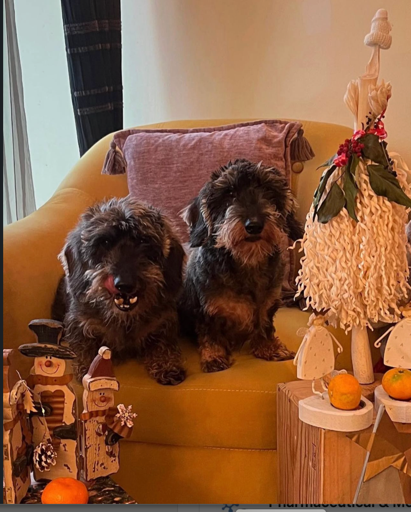

Companion animals
Dogs and cats face urgent oxygen-delivery needs in severe anemia, trauma and surgery. Evidence and regulatory status must remain species-specific.
BHOC RED BOOK MISSION
For Every Species. Wherever Life Is at Risk.
From Nature. Through Science. Back to Nature.
Nature created the biological mechanisms that sustain life. Science gave us the ability to understand them. Knowledge gives us not only opportunity, but responsibility.
We are not separate from nature. We are part of it.

Across almost all vertebrate life, one central oxygen carrier: hemoglobin.*
We cannot build a donor-blood system for every species on Earth.
Can science learn enough from nature to give that knowledge back to life?
A species-first development framework for companion animals, equine and camelid medicine, avian care, wildlife, zoo, marine and exotic species.
Dogs and cats face urgent oxygen-delivery needs in severe anemia, trauma and surgery. Evidence and regulatory status must remain species-specific.
Large-animal logistics make donor access and compatibility especially difficult. Research must address physiology, dose and safety directly.
Birds, raptors, parrots and exotic species require dedicated translational evidence. No dog approval is transferable by assumption.
Emergency veterinary care can become part of conservation capacity where every individual may matter to a threatened population.
Every Species. Every Breath. Every Future.
Veterinary science has a role beyond treating familiar species. The mission is to translate knowledge responsibly, strengthen oxygen-delivery research and support the veterinary teams protecting life where conventional donor systems cannot scale.
Biodiversity figures are cited from the independent IUCN Red List of Threatened Species. BHOC Veterinary is not presented as an IUCN partner or endorsed initiative.